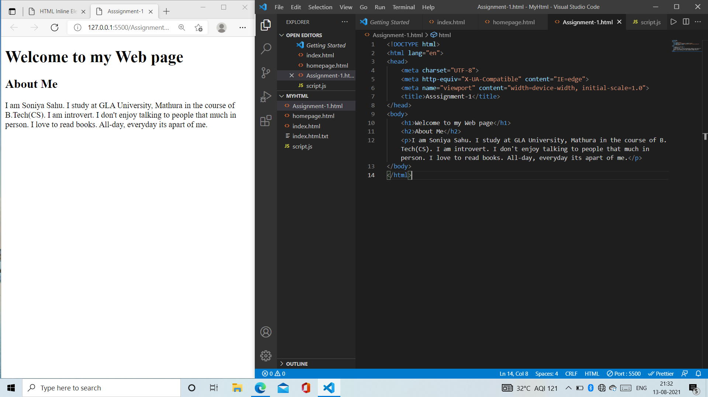
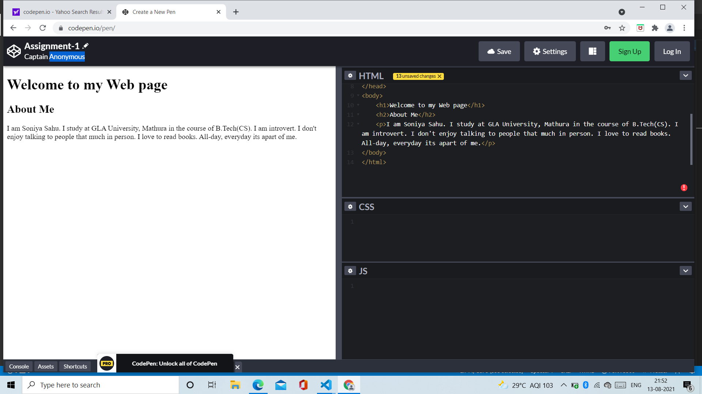

Full Stack Web Development is nothing but complete designing of both websites and applications where the developers need to work from frontend to backend development. With our Full Stack Web Development Course, you will become an expert in all the aspects of web development such as Java, .NET, MEAN Stack and Python.

